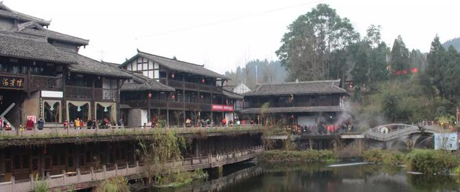

{#轮播图专用html文件#}
{% load staticfiles %}
<div class="banner">
      <div id="slide-holder">
        <div id="slide-runner">
            <a href="/" target="_blank"></a>
            <a href="/" target="_blank"></a>
            <a href="/" target="_blank"></a>
            <a href="/" target="_blank"></a>
            <a href="/" target="_blank"></a>
            <a href="/" target="_blank"></a>
          <div id="slide-controls">
            <p id="slide-client" class="text"><strong></strong><span></span></p>
            <p id="slide-desc" class="text"></p>
            <p id="slide-nav"></p>
          </div>
        </div>
      </div>
      <script>
    if(!window.slider) {
    var slider={};
  }

  slider.data= [
    {
        "id":"slide-img-1", // 与slide-runner中的img标签id对应
        "client":"青藏高原",
        "desc":"本图片摄于大通县" //这里修改描述
    },
    {
        "id":"slide-img-2",
        "client":"重庆",
        "desc":"本图片摄于磁器口"
    },
    {
        "id":"slide-img-3",
        "client":"大美青海",
        "desc":"欢迎来到天空之境—茶卡"
    },
    {
        "id":"slide-img-4",
        "client":"大理之夜",
        "desc":"古城生活的一角"
    },
    {
        "id":"slide-img-5",
        "client":"python",
        "desc":"python学习历险记"
    },
          {
        "id":"slide-img-6",
        "client":"2017的春节",
        "desc":"春节重庆节日游"
    }
  ];

    </script>
    </div>
  <!-- banner代码 结束 -->